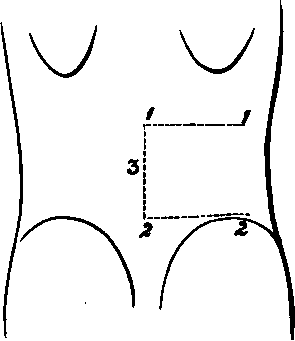

A Dissection Of The Posterior Surface Of The Kidney
Description
This section is from the book "A Manual Of Dissections Of The Human Body", by R. E. Carrington. Also available from Amazon: A manual of dissections of the human body.
A Dissection Of The Posterior Surface Of The Kidney
Position
The body lying upon its face.
I. Skin Incisions
1. From the spine of the twelfth Dorsal vertebra, transversely outwards to the tip of the last rib.
1 It may be objected that these incisions will not uncover a sufficient surface to expose the Kidney. The writer has always proceeded on the principle of the least possible destruction of surround.
No. 15.
Reflect the flap outwards and expose the superficial fascia, containing—
1. The external branches of the posterior primary divisions of the eleventh and twelfth Dorsal nerves at the upper part, about one inch from the median line. The branch from the twelfth nerve external to the other.
2. The posterior branches of the Lateral Cutaneous offsets of the tenth and the eleventh Dorsal nerves extending backwards at the anterior and upper part.
3. The external branches of the posterior primary diviing parts, compatible with a full view of the structure to be displayed, and he has found from repeated dissections of the Kidney that these incisions are ample.
2. From the spine of the fourth Lumbar vertebra transversely outwards to the crest of the Ilium, and along it to a point midway between the anterior and posterior Iliac spines.
3, A longitudinal incision along the median line from the spine of the twelfth Dorsal to the fourth Lumbar vertebrasions of the first, second, and third Lumbar nerves passing over the crest of the Ilium, the upper ones supplying filaments to the skin over the lower part of the space between the last rib and the crest of the Ilium.
4. Small cutaneous branches from the Intercostal arteries with the posterior and lateral cutaneous nerves, and from the Lumbar arteries with the Lumbar nerves.
II
Remove the preceding and the fascia lata, and expose—
The aponeurosis of the Latissimus dorsi muscle attached to the Lumbar spines and about the posterior half of the crest of the Ilium. Fleshy fibres of the muscle are seen for an inch or more in front of the aponeurotic Iliac attachment of the muscle, and also at the upper part.
III
Cut through the Latissimus dorsi muscle at its attachment to the Iliac crest, and again along the upper border of the twelfth rib. Join these transverse cuts by a longitudinal one through the muscle between their outer extremities. Reflect the muscle inwards as far as possible towards the median line behind.
There will now be exposed—
1. The Serratus posticus inferior muscle running from the spines of the last Dorsal and upper two or three Lumbar vertebræ upwards and outwards, and its attachment to the last rib will be seen.
2. The posterior layer of the aponeurosis of the Transversalis muscle will be seen below. These three aponeurotic structures, viz., the origins of the Latissimus dorsi and Serratus posticus inferior muscles, and the posterior lamella of the aponeurosis of the Transversalis are all more or less conjoined with one another at their attachments to the Lumbar spines. The united aponeurosis constitutes the Fascia lumborum. 3. The outer edge of the Fascia lumborum will be found to be marked by a definite vertical line, which later on is seen to correspond to the external border of the Erector spinæ muscle. Outside this, the fleshy origin of the Internal Oblique muscle, from the middle layer of the posterior aponeurosis will be seen.
4. More externally still, the posterior free edge of the External Oblique muscle will be seen, extending from the last rib to the Iliac crest, having internal to it the cut edge of the Latissimus dorsi muscle.
5. The outer portion of the last rib will be seen above, and probably, owing to the retraction of the skin, the lower fibres of the last External Intercostal muscle.
IV
a. Clear away completely the Lumbar fascia.
b. Detach the Internal Oblique muscle from its origin, and turn it outwards. There will now be exposed—
1. Nearest to the median line the Erector spina muscle, dividing above into Sacro-lumbalis externally, and Longissimus dorsi muscles internally, at about the level of the last rib.
2. Internal to the Longissimus dorsi muscle, from the twelfth Dorsal and upper two Lumbar spines, the Spinalis dorsi muscle passing upwards.
3. External to the Erector spinæ muscle, the cut edge of the posterior layer of the aponeurosis of the Transversalis muscle. Outside this the middle layer, and, still more externally, the undivided aponeurosis and the fleshy fibres of the muscle.
4. Still more externally, the divided Latissimus dorsi and the External Oblique muscles, as before.
5. Resting upon the upper part of the Erector spinæ the external branches of the posterior primary divisions of the eleventh and twelfth Dorsal nerves, and, piercing its outer border, the corresponding branches of the upper three Lumbar nerves.
6. The anterior branch of the last Dorsal nerve with its accompanying vessels piercing the aponeurosis of the Transversalis muscle at the outer part.
V
The further progress of the dissection will depend upon the width of the Erector spinæ muscle. Usually it will be necessary to remove it, or at least the outer part, but the muscle may be narrow, and then it may be cut transversely at the level of the last rib, and drawn inwards sufficiently. It will be well to proceed as follows:— a. Make a transverse cut into the upper part of the Erector spina muscle, and draw the muscle well inwards towards the spines of the vertebræ.
b. Remove the middle layer of the Transversalis aponeurosis and the fleshy fibres of the muscle by vertical cuts, externally and internally. The last Dorsal vessels and nerve may be dissected out and left.
There will now be exposed, in addition to the structures enumerated under Stage IV.—
1. The tips of the transverse processes of the four upper Lumbar vertebræ.
2. The Quadratus lumborum muscle.
3. Resting upon the posterior surface of the Quadratus lumborum muscle the anterior branches of the four Lumbar arteries, but the lowest may pass in front. With the arteries are the corresponding veins.
VI
Take away now the Quadratus lumborum muscle completely, with the vessels lying upon it. There will now be exposed, in addition to the structures already enumerated—
1. The anterior layer of the aponeurosis of the Transversalis muscle.
2. Further portions of the last Dorsal vessels and nerve; lying immediately below the last rib.
VII
Remove the anterior lamella of the aponeurosis of the Transversalis muscle and a quantity of adipose tissue, and there will be displayed—
1. The posterior surface of the Kidney. This organ is very movable, and enveloped by fat. The writer has found as the result of several dissections that, putting for the moment on one side the question of the removal of the Erector spinæ muscle, the Kidney will now fall forwards, and the whole of its posterior surface may be now cleaned and exposed, and that the removal of the eleventh and twelfth ribs is entirely unnecessary. Besides the Kidney there will be displayed—
2. The Pelvis of the Kidney and the commencement of the Ureter.
3. The Colon ascending or descending according to the side dissected. On the left side it lies below and external to the Kidney, on the right more immediately below. Arteries and veins from and to the Superior or Inferior Mesenteric vessels, as the case may be, can also be traced to the Intestine.
4. The Peritoneum and subperitoneal fat will be seen outside the preceding viscera.
5. Crossing the Kidney transversely from above downwards will be seen—
The anterior branches of the last Dorsal vessels and nerve.
The Ilio-hypogastric nerve.
The Bio-inguinal nerve.
6. Internally the outer part of the Psoas magnus muscle.
7. Above, the origin of the Diaphragm from the ligamentum Arcuatum externum.
VIII
The dissection has been given from Stage V. on the supposition that the Erector spinas muscle was sufficiently narrow to allow of its being drawn inwards after making a transverse cut at the upper part. This the writer knows from experience to be the case sometimes. Nevertheless, it more often happens that the muscle is too wide to admit of this mode of treatment, and when this is the case the following correction must be made for Stage V.:—
Remove the Erector spinæ muscle as far as it is exposed in the dissection. In addition to the structures already enumerated, there will now be displayed—
1. The inner half of the twelfth rib, and the transverse processes of the four upper Lumbar vertebræ.
2. The attachment to the last rib of the twelfth Levator costæ muscle between the tubercle and the angle.
3. The Multifidus spina muscle, arising from the mammillary processes of the Lumbar vertebra and passing upwards and inwards to the spinous processes.
Continue to:
- prev: A Dissection Of The Portal Vein, And Its Branches
- Table of Contents
- next: A Dissection To Expose The Posterior Surface Of The Sacral Plexus